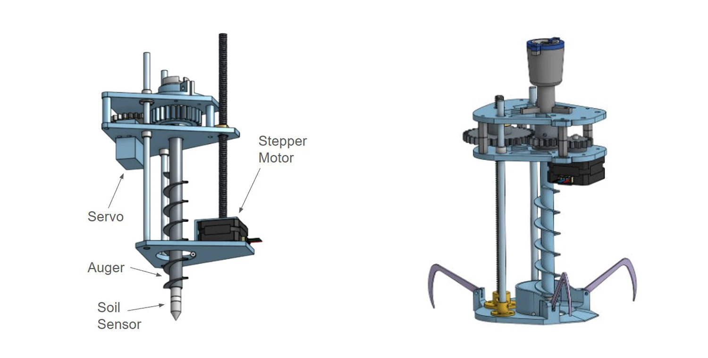
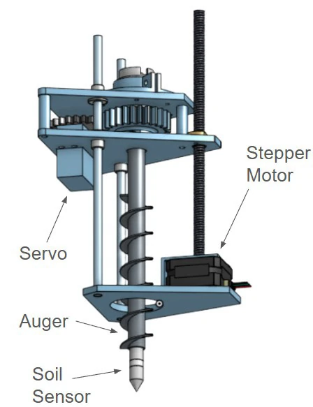
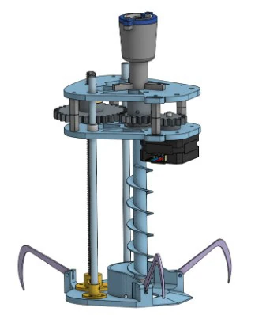

HydroFleet soil sampling mechanism
A drone-deployed soil-moisture probe developed around a strict payload limit, reliable insertion, and the need to resist drill-induced uplift during soil sampling.

The engineering problem
The mechanism had to land with a drone, remain stable against the reaction force from drilling, insert a probe into soil, and stay below the aircraft payload limit. Those constraints made mass, alignment, anchoring, and repeatability tightly coupled.
My contribution
I co-developed two drone-mounted prototypes and contributed to mechanical concept development, CAD, prototype assembly, and testing. I also tested anchor geometries intended to resist the upward reaction generated by the auger.
Since Fall 2026, I have served as a Mechanical Design Co-Lead for the Robotics Lab team.
Iteration and testing
The early architecture used independently driven insertion and auger rotation. Bench and soil-bucket testing exposed stability, alignment, and anchoring problems, so the design evolved toward a centralized auger and added anchors.
The team balanced motor layout, structural support, anchor geometry, insertion behavior, and mass across repeated prototypes.
Visuals
Selected CAD, test data, and simulation outputs from the project.


More engineering work
Return to the main portfolio for mechanical design, controls, thermal-fluid modeling, and manufacturing projects.